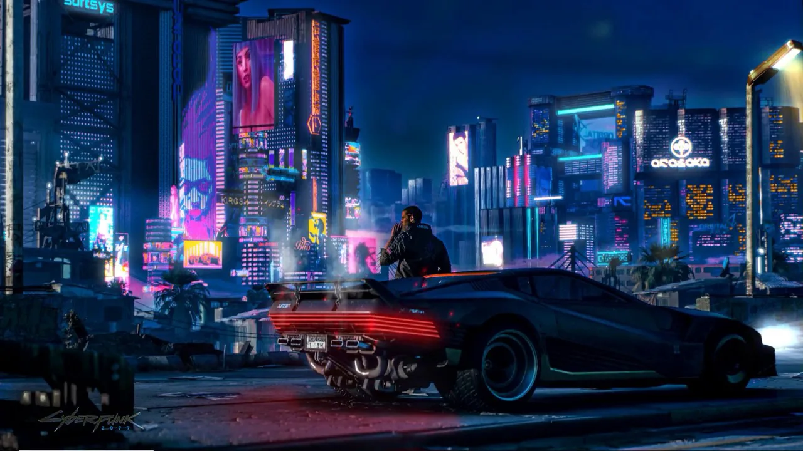
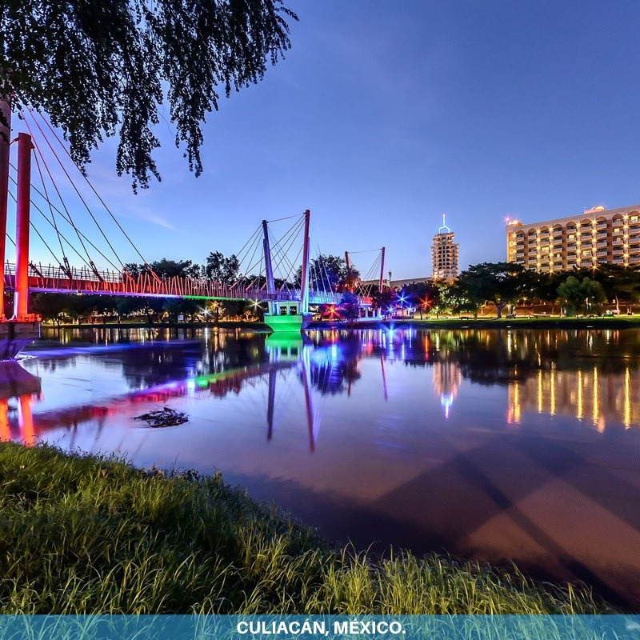

Me llamo Jesús Monterrubio y solo puedo decir que viví la mayor parte de mi vida en Culiacán, Sinaloa por lo que es mi ciudad favorita, además de tener gustos particulares por la colección de monedas antiguas, la seguridad informática en todas sus facetas, el anime y los videojuegos como WarZone y Cyberpunk 2077.


También me encanta la música tranquila e inspiradora, así que les recomiendo la siguiente:
¡Saludos a todos!